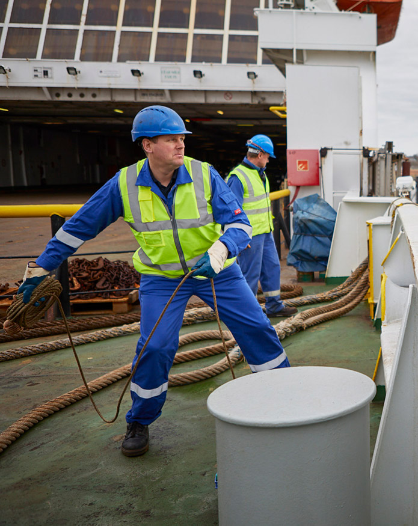

Safety
The promotion and maintenance of a strong safety culture across all activities is a principle strategy of Irish Continental Group, to not only ensure the safety, security and well-being of our people and passengers, but also so that all stakeholders reap the competitive rewards that come from giving safety top priority.
The Group’s operations span a wide range of activities, both ashore and afloat. It is a matter of high priority that all our activities are conducted in a manner that ensures the safety and security of all our people, and all those who travel on board our ships or visit our terminals.
The bedrock of Irish Continental Group’s safety performance is our people. We place strategic emphasis on ensuring all those who work within the Group’s sphere of operations are competent, provided with a high level of safety and quality training and information, and are encouraged to engage with the Group’s continuous improvement philosophy.
Compliance with policy and procedures, both ashore and afloat, is monitored by regular and detailed audits. Audits are conducted by trained and experienced auditors in an open yet focused manner that drives compliance and improvement. Senior management monitor safety and audit performance across the Group, identifying and addressing safety trends and opportunities for improvement where they may arise.
In addition to the Group’s own internal verification procedures, our activities are subject to regular routine inspection by national and international statutory bodies. They, like us, set high standards to ensure the safety and well-being of all personnel, passengers and cargoes; standards that we as a Group are ready to meet and exceed.
Ashore
As a minimum, all of the Group’s activities are conducted in strict compliance with the various statutory health and safety standards and international maritime regulations that apply. In accordance with the Safety, Health and Welfare at Work Act and its equivalents in other jurisdictions, the Group has in place Safety Policies and Safety Statements that guide our activities. We have in place a system of hazard identification and risk assessment that ensures all necessary steps are taken to minimise and mitigate safety risks. Laid down procedures ensure that activities and operations are conducted in a consistent and safe manner. By fostering a culture of employee competence and participation we empower our employees to continuously improve the efficiency and safety of our activities, so contributing to a safe environment for all.
At Sea
Irish Continental Group ensures that all its ships are designed, operated and maintained in compliance with the International Convention for the Safety of Life at Sea (SOLAS). This Convention is administered by the UN’s International Maritime Organisation and is subject to continuous international review and updating, ensuring ship safety standards keep pace with societal expectations and technological advances.
The safety and security of ship’s crews, passengers and cargoes is critical to our business, and is always the primary consideration. Irish Continental Group ships are certified in accordance with the International Safety Management (ISM) Code, the international standard for the safe management and operation of ships and for pollution prevention.
Irish Continental Group also operates in full compliance with the International Ship and Port Facility Security (ISPS) Code on board all ships and at all locations. The on-board management of the Irish Ferries operated vessels was performed by Matrix Ship Management Limited, Cyprus, on behalf of Irish Continental Group.
While the focus is on accident prevention where incidents do occur, effective internal and external reporting and investigation systems are employed to identify the cause of such incidents and put in place actions to prevent recurrence. Due to the highly regulated environment in which we operate, incidents may be subject to external investigation by the appropriate regulatory authority. The Group will always work with the authorities toward a successful and worthwhile investigation outcome.
Environmental
Ship Operations
All forms of transport have an unavoidable impact on the environment. Though one of the most environmentally efficient modes of transport, as measured by cargo tonnes per kilometre, management of the environmental impacts of shipping requires ongoing action and investment by the Group. The industry is subject to a high degree of regulation and is supervised by a large number of regulators globally with the principle standards emanating from the International Maritime Organisation, a UN sponsored body, being adopted by the European Union. The principal areas of environmental management include;Management of Exhaust Carbon Dioxide (CO2) Emissions
The consumption of fossil fuels results in carbon dioxide output, the volume of which is directly proportional to fuel consumption. The Group seeks to minimise fuel usage as much as possible consistent with the safe and efficient operation of the fleet. Energy efficiency awareness training is undertaken for all crew to highlight obvious areas where they can contribute to power savings. The Group has implemented a Ship Energy Efficiency Management Plan for each vessel which sets targets for a reduction in CO2 emissions. This is achieved through technical and operational initiatives and investment in latest technologies.
Our most recent initiative has been the fitting of new energy efficient propeller blades and new rotating propeller caps on the cruise ferry Ulysses. The Group’s two new builds have been designed in line with the current energy efficiency design indices.
Management of Exhaust Sulphur emissions
Sulphur emissions are dependent on the volume and type of fuel consumed. In addition to the management of fuel consumption the Group in 2010 reduced the sulphur content of the fuels its vessels consumes from 3.5% to 1.5%. From 1 January 2020 the Group will further reduce the sulphur content of its fuel oils consumed to 0.5% or employ Exhaust Gas Cleaning Systems (EGCS) to achieve a similar sulphur emissions effect. Additionally, all Group vessels since 2015 consume 0.1% sulphur content fuel when operating in the Sulphur Emission Control Areas (SECAs) in the English Channel and North Sea on its container services and cruise ferry services to France.
The Group is investing in EGCS across its fleet. This allows the vessels to consume higher sulphur fuels but cleans the exhaust emissions to similar levels as had low sulphur fuels being consumed. The latest addition to the Irish Ferries fleet, the W.B. Yeats was designed with EGCS and is already operating within the 0.5% and 0.1% limits. The second new build scheduled for delivery in late 2020 will also incorporate EGCS. The Group has approved further investment for retro fitting of EGCS on its cruise ferries Ulysses and Isle of Inishmore and all its owned container vessels.
Habitat Protection
The intake and discharge of ballast water (sea water) is an integral part of vessel stability management, though poor management of ballast water systems can damage local biodiversity through transference of non-native marine species.
The Group has implemented a Ballast Water and Sediments Management Plan across all its fleet for correct management of ballast water to help prevent the spread of harmful marine species by transference. Its new vessels have been designed with ballast water treatment systems. The painting of the underwater hulls of all our vessels is with tin-free, non-toxic paints to avoid the release of harmful agents into the sea. We also minimise to the best of our ability wave generation to minimise disturbance of coastal habitats while we strive to be at the forefront in promoting customer awareness of the marine environment.
Other areas
The disposal of waste at sea is strictly prohibited by regulation and all our vessels have a waste disposal plan. All vessels use oil recovery systems to recover spent oils which are then sent for recycling to processors with regulatory approvals. All other vessel waste is segregated where possible and also sent for recycling at approved facilities. The Group is currently exploring the elimination of one use plastics in the catering activities on board its vessels. To date the use of plastic disposable cups have been changed to a biodegradable alternative.
Hotel and Catering Activities
We provide accommodation and catering facilities on board our vessels for our 1.5 million guests annually. Conscious of the impacts this may have we constantly seek to minimise the impact on the environment of these activities. Initiatives include fresh water conservation whereby we have installed water saving devices on our vessels, a move to containerised provisioning of our vessels, sustainable sourcing of food ingredients and a move away from single use plastics.
Shore Based Activities
Container Terminal Activities
Our land based terminals at Dublin and Belfast utilise energy in the form of direct consumption of fossil fuels and electricity generating exhaust emissions. The nature of operations is that terminals generate road traffic and certain levels of noise.
The owned ship to shore gantries at Dublin are powered by electricity together with the two rubber tyred gantries commissioned during 2018. Electric equipment together with low frequency alarms fitted on mobile equipment reduces sound generation and provides better energy efficiency. A new transport management system is also being trialled at Dublin, which by reducing waiting times will result in less truck emissions on the part of our haulage sub-contractors.
Office Locations
The Group encourages staff at its office locations to be environmentally aware highlighting waste and recycling. Recent initiatives in the last year include a consolidation of office locations and installation of energy efficient lighting.